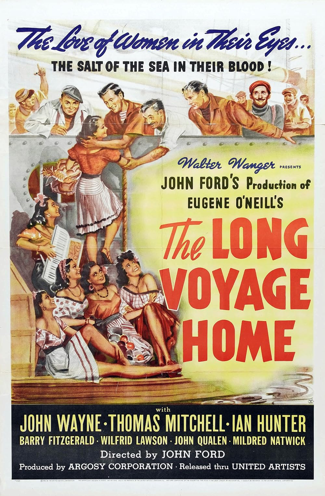

The Long Voyage Home
13th Academy Awards
(Oscars 1941)
6 Nominations, 0 Awards
| Nominations | ||
|---|---|---|
| Category | Nominees | Result |
| Outstanding Production | Argosy-Wanger | Nominated |
| Writing (Screenplay) | Dudley Nichols | Nominated |
| Cinematography (Black-and-White) | Gregg Toland | Nominated |
| Film Editing | Sherman Todd | Nominated |
| Special Effects | R. O. Binger, R. T. Layton, and Thomas T. Moulton | Nominated |
| Music (Original Score) | Richard Hageman | Nominated |